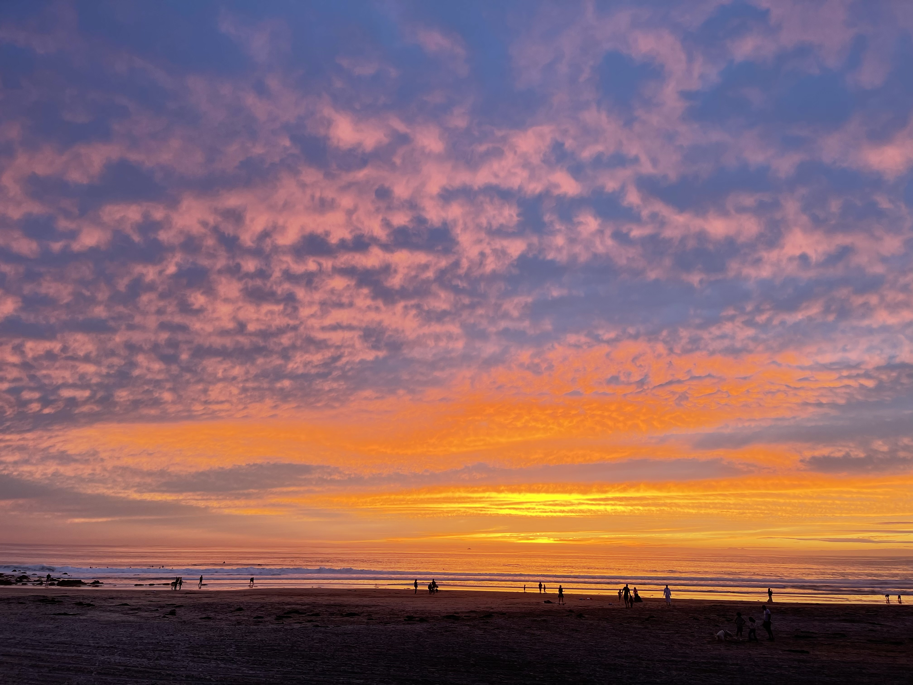
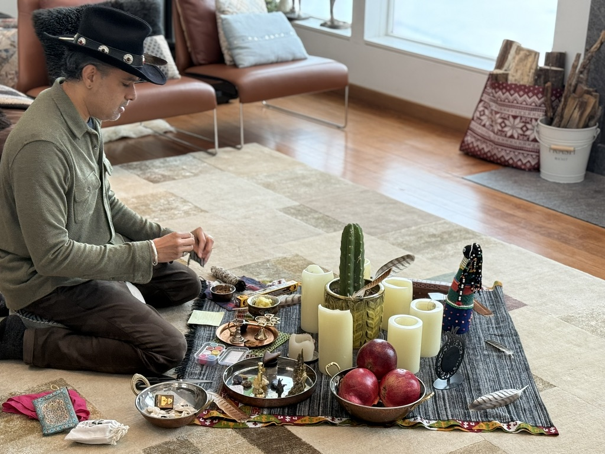

Retreat Leader · Conscious Business · Inner Work
Supporting people in finding their way back to themselves and to others — through intimate retreats, ceremonies, & work in mental health.

A single, powerful container.
Immersive, guided experiences designed for deep inner work. Nature-based retreats and intentional gatherings that help you release, reconnect, and come back to yourself.
Learn more →A shared recalibration. Held in community, in nature — a single, powerful experience of collective presence, grounded in meditation, intention, and ceremony.
Learn more →A guided four-week journey of reconnection, reflection, and transformation — private, structured, and paced to your life. Not to become someone new. To remember who you already are.
Learn more →"Nature reminds us who we were before the world told us who to be."
"The nervous system is not a problem to solve. It is an intelligence to befriend."
"Unconditional love is not a destination. It is the path itself."
"The most successful leaders I know are the ones who learned to feel."
Every retreat creates a circle that lasts long after the fire goes out. These are the people who show up — leaders, seekers, builders — all arriving at the same threshold.
"I came expecting a wellness retreat. I left with a completely different relationship to myself and my leadership. Sachin holds space unlike anyone I've ever encountered."
"The combination of breathwork, IFS work, and Montana's landscape created something I can't fully put into words. I returned to my company a more present, more honest version of myself."
"Sachin's own story — Wall Street to wellness — is the bridge so many of us need. He speaks the language of high performance AND the language of the heart."